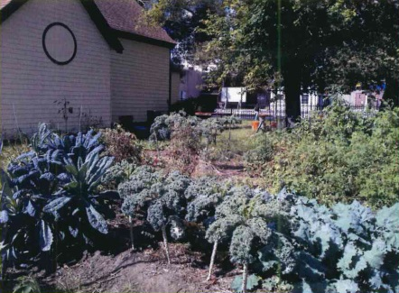

Newton Monthly Meeting
Religious Society of Friends
The Garden Project

Since it was established in 2007, the Garden Project has served more than 300 residents of the Garrett House, a halfway house under the supervision of the NJ Department of Corrections. Women from the Garrett House contribute to the community throughout the year by growing vegetables for the needy people and helping to maintain a garden on the grounds of Newton Monthly Meetinghouse, a historic landmark in the center of Camden.
The garden is transformed each summer into a lush oasis of sunflowers, tomatoes, kale, melons, beans, potatoes and more.
On Saturdays throughout the year, volunteers from the community, local Quaker meetings and the Garrett House residents plan and plant the garden, and prepare and share a simple lunch featuring produce they have grown. They take part in workshops on a broad range of topics from alternatives to violence to jewelry making, memoir and poetry writing, yoga, personal survival skills and meditation.
Volunteers provide Tutoring and encourage the Garrett House residents to pursue educational and career goals. Each woman is encouraged to nurture herself by learning about good nutrition, constructive communication with others and the pursuit of hobbies and creative activities.
The program celebrates birthdays, special acknowledgements such as graduation from school and the start of new jobs. Garrett House residents express deep gratitude for the fellowship and encouragement they receive as they prepare to return home.
Many Garrett House residents credit the program with inspiring them to seek and maintain productive relationships with family and friends after they return to their communities.
A Touch of Beauty in A Historic Urban Setting
The Garden Project meets at the Newton Meetinghouse, where Quakers have gathered since 1824.
The Property is located in the center of Camden, just blocks from the foot of the Benjamin Franklin Bridge.
Each spring, summer and fall, the garden becomes a beacon of color and beautiful scents to birds, butterflies and other admirers.

A Little Haven of Hope
Many Garden Project participants welcome the opportunity to work the soil and to provide produce for the program and for others through community service.
The Garden Project is a place I can come on Saturdats and forget about everything that week and be treated like a human being, not judged - that means so much to us
I'm taking bags of vegetables with me when I go and taking them to my boys and say 'See what I grew for you! Eat all your vegetables!'
Nurturing Hope, Health, Friendship & Peace
The Garden Project cultivates a cooperative garden and nurtures an underserved community in Camden, New Jersey, relying upon Quaker principles of integrity, equality, simplicity, service and peace.
If I could be something from the garden, I would be a sunflower, because it's bright and cheery and always growing.
Support the Garden Project
The Garden Project is a unique partnership lef by Haddonfield Monthy Meeting of the Religious Society of Friends and Friends Transition Support Services. Though the Garden Project operates in cooperation with the Volunteers of America, which runs Garrett House, it recieves no support from the organization.
Tax-deductible donations toward the cost of food, gardening materials and tools are always needed and welcomed.
Checks should be made out to Haddonfield Monthly Meeting with "FTSS" noted in the memo line, and mailed to;
Clerk, Peace, and Social Concerns Committee
45 Friends Ave.
Haddonfield, NJ 08033
www.haddonfieldfriendsmeeting.org